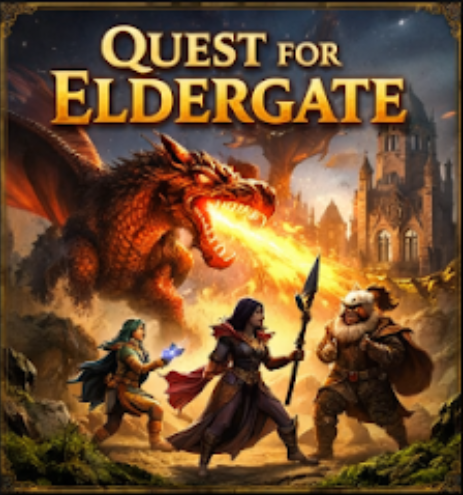
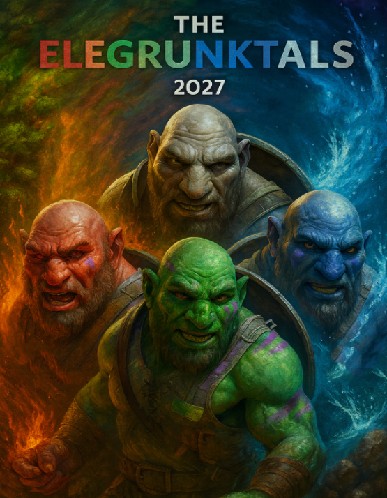

Welcome to our Blog page!
In this page you will find information on our most anticpated/newly released games so that you know the general story of our games, characters and more!
QUEST FOR ELDERGATE (2019)
The ancient seal has cracked, and the fires of the Old World have returned.

As the massive Crimson Drake descends upon the last standing citadels, three unlikely heroes must journey to the mythical Eldergate to restore the balance before the realm is reduced to ash.Meet the Party!
Valerius the Bold: A seasoned dwarven commander whose strength is matched only by his unwavering resolve.
Elara of the Void: A powerful sorceress wielding a legendary spear, capable of channeling raw arcane energy against the draconic threat.
Kaelen the Seeker: A nimble rogue and master of mystical artifacts, tasked with finding the key to the Gate before time runs out.
"When the sky burns, only the brave will stand."
SHADOW OPS: BLACKOUT (2022)
The grid has gone dark, and the city is a powder keg. When a global conspiracy triggers a total communication blackout across the world’s major metropolises, the only thing standing between order and total annihilation is a ghost unit that doesn't exist on any map.
The Operator Sergeant Elias "Viper" Thorne: A veteran of the Tier-1 elite, Thorne is a specialist in night-cycle urban warfare. Equipped with the latest prototype thermal-optic HUD and a custom-suppressed assault rifle, he is the scalpel used to cut out the heart of the insurgency under the cover of darkness.
"We don't need the lights on to see the enemy."
ECLIPSE: GALAXY WAR (2023)
The stars are fading, and the Great Void is consuming entire systems. As the last remnants of the Galactic Alliance scramble for resources, a rogue fleet must venture into the heart of the "Eclipse"—a massive, unstable sun that holds the power to either reboot the universe or end it forever.
As the last remnants of the Galactic Alliance scramble for resources, a rogue fleet must venture into the heart of the "Eclipse"—a massive, unstable sun that holds the power to either reboot the universe or end it forever.
The Crew of the Aegis-7:
Captain Jaxen Thorne: A disgraced former admiral who knows the tactical layout of every star system in the quadrant.
Lieutenant Nyx Valen: The galaxy’s premier pilot, capable of maneuvering a heavy cruiser through a collapsing supernova.
Chief Engineer "Sprocket" Vane: A mechanical genius who keeps the Aegis-7’s experimental light-speed engines running with nothing but grit and recycled scrap.
"The light is dying. It’s time to show them what we can do in the dark."
ROGUE INFERNO (2026)

The surface world is a frozen wasteland, but beneath the crust lies the Inferno, a shifting labyrinth of molten rock and ancient malice. As the demonic Overlord awakens to reclaim the world above, a brave gang of hunters must dive into the flames to strike at the heart of the hellscape. In this realm, fire isn't just an obstacle; it’s a weapon.
Meet the hunters:
Kaelen the Ash-Walker: A hooded rogue who has mastered the art of "flame-weaving." He wields twin obsidian daggers that ignite upon contact with demonic blood.
Vorgon the Ironclad: A hulking juggernaut encased in soul-forged armor. He serves as the party’s unbreakable shield, shrugging off magma bursts that would incinerate any lesser warrior.
Lyra the Ember-Witch: A sorceress who sacrificed her humanity to command the living flame. She provides devastating long-range support, turning the environment itself against the demonic horde.
"The deeper you go, the hotter the price of victory."
THE ELEGRUNKTALS (Coming June 4th 2027!)

The world of Grunkterra is out of balance. When the Great Prism shattered, the primal forces of nature were scattered across the four corners of the globe. Now, a band of elite, elemental-imbued brothers the Elegrunktals must unite their unique powers to reclaim the shards and prevent the chaotic Shadow realm from erasing their home. Whether you're smashing through stone or surging through the surf, teamwork is your only hope for survival.
The Elemental Brothers
Pyrus the Fierce: Born of the volcanic heartlands, his rage fuels devastating fire strikes that can melt through the toughest enemy armor.
Terra the Stalwart: A literal mountain of a man, his earthen skin and immense strength make him the unbreakable frontline of the team.
Glaciux the Chilled: Master of the frozen seas, he uses icy precision and tactical freezing to control the flow of the battlefield.
Verde the Swift: Imbued with the energy of the winds, he is the fastest of the brothers, striking with the unpredictability of a storm.
The Shadow Warrior: A meanacing villain whos only goal is to destroy Grunkterra and defeat the elegrunktals once and for all.
"Four brothers. Four elements. One chance to save the world."